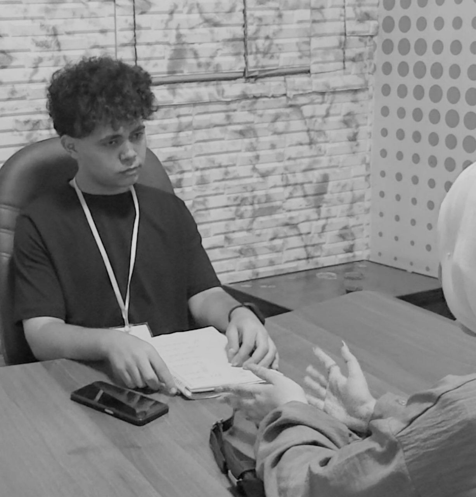

Front-End
أشتغل على بناء مواقع responsive بواجهة واضحة وتنظيم كويس.

أنا طالب في الفرقة الثالثة بكلية الحاسبات والذكاء الاصطناعي بجامعة سوهاج. مهتم بـ Front-End وFlutter، وبحب أبني مشاريع شكلها نظيف وسهل التعامل معها.
أشتغل على بناء مواقع responsive بواجهة واضحة وتنظيم كويس.
ببني واجهات تطبيقات موبايل بسيطة ومنظمة وسهلة الاستخدام.
بهتم بشكل المشروع النهائي وطريقة عرضه عشان يطلع بصورة محترمة.
تقدر تتواصل معايا بخصوص شغل، تعاون، أو حتى لو عايز تشوف مشاريع أكتر في الـ Front-End أو Flutter.